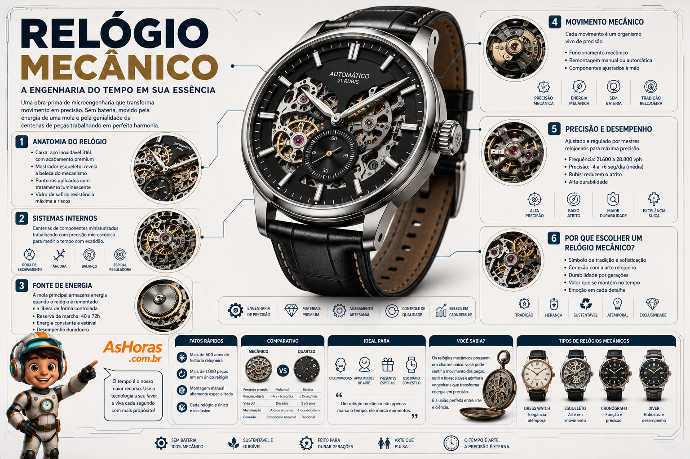

Relógio Mecânico: a arte de medir o tempo sem bateria
Nenhum chip, nenhuma pilha. Só uma mola, dezenas de engrenagens minúsculas e a habilidade humana de transformar energia mecânica em precisão — do jeito que se faz há mais de 500 anos.
Como funciona um relógio mecânico?
Um relógio mecânico guarda energia em uma mola principal, que se solta aos poucos e faz girar um conjunto de engrenagens. Um regulador chamado escapamento libera essa energia em pulsos constantes, criando o "tique-taque" e movendo os ponteiros com precisão. Existem dois grandes tipos: o de corda manual, que você mesmo dá corda girando a coroa, e o automático, que se recarrega sozinho com o movimento do seu pulso.
Tipos de relógio mecânico
O estilo do mostrador e da caixa costuma revelar para que uso o relógio foi pensado — de escritório a mergulho.
Anatomia do movimento mecânico
Certificação de precisão: o que é um cronômetro
Como escolher um relógio mecânico
Prós e contras
Vantagens
- Nunca precisa de bateria — funciona só com energia mecânica
- Pode durar gerações com manutenção adequada
- Valor sentimental e de coleção, com acabamento artesanal
Desvantagens
- Menos preciso que um relógio de quartzo
- Exige manutenção periódica em um relojoeiro
- Geralmente mais caro que outros tipos
A expressão "dar corda" no relógio vem justamente do gesto de girar a coroa para tensionar a mola principal. Alguns relógios mecânicos de altíssima complicação levam mais de um ano de trabalho manual de um único relojoeiro para serem montados.
Infográfico: o relógio mecânico por dentro

Linha do tempo do relógio mecânico
Primeiros relógios portáteis
Peter Henlein, em Nuremberg, cria os primeiros relógios de mola pequenos o bastante para carregar no bolso.
Balanço espiral
Christiaan Huygens aplica a mola espiral ao balanço, multiplicando a precisão dos mecanismos.
Nasce o automático
Abraham-Louis Perrelet desenvolve um rotor que carrega a mola com o simples movimento do corpo.
O relógio vai para o pulso
Patek Philippe produz um dos primeiros relógios mecânicos pensados para o pulso, não o bolso.
Nasce o COSC
A Suíça unifica seus laboratórios regionais de teste na Contrôle Officiel Suisse des Chronomètres, padronizando a certificação de precisão.
Tradição viva
Manufaturas suíças e japonesas seguem montando calibres mecânicos à mão, peça por peça.
Reserva de marcha por tipo de movimento
Perguntas frequentes
Relógio mecânico atrasa ou adianta com o tempo?
Sim, é normal que varie alguns segundos por dia. Por isso existem o ajuste periódico em um relojoeiro e a certificação de cronômetro, que atesta uma precisão dentro de limites bem definidos.
Posso usar um relógio automático na água?
Depende da resistência à água declarada pelo fabricante. Verifique a classificação em metros ou ATM antes de nadar, tomar banho ou mergulhar com o relógio.
O que acontece se eu não usar o automático por muitos dias?
Ele simplesmente para quando a reserva de marcha se esgota. Basta dar corda manualmente pela coroa e ajustar a hora novamente para colocá-lo de volta em funcionamento.
Vale a pena comprar um relógio mecânico sem certificação COSC?
Sim. A maioria dos relógios mecânicos de qualidade não é certificada e ainda assim mantém boa precisão — a certificação é mais relevante para quem busca uma garantia documentada de desempenho.
Referências e leituras complementares
Este conteúdo foi baseado em fontes públicas sobre a história, a certificação e o funcionamento dos relógios mecânicos. Para se aprofundar, vale a leitura: